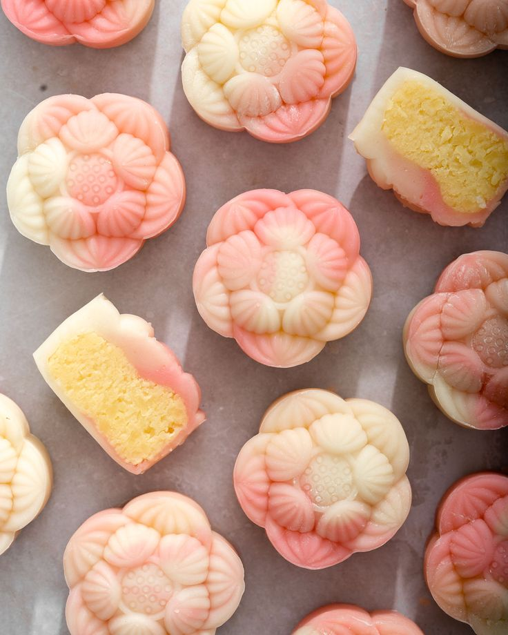

Snowskin Mooncake with Custard Filling

Description
Custard Snowskin Mooncakes are a delightful twist on the traditional
mooncake. These no-bake treats feature a soft, chewy snowskin made with
glutinous rice flour, filled with a rich and creamy custard filling.
Perfect for celebrating the Mid-Autumn Festival or as a unique dessert any
time of the year.
This recipe combines the perfect balance of textures and flavors, offering
a cool and refreshing alternative to baked mooncakes. They're surprisingly
simple to make and sure to impress friends and family.
Ingredients
- 100g glutinous rice flour
- 50g icing sugar
- 35g vegetable oil
- 100ml milk
- 1 egg yolk
- 20g custard powder
- 60g sweetened condensed milk
- Food coloring (optional)
Steps
-
Prepare the custard filling by mixing custard powder, condensed milk,
egg yolk, and milk in a bowl. Cook over low heat until thickened, then
chill in the fridge.
-
In a separate bowl, mix glutinous rice flour, icing sugar, vegetable
oil, and milk to form the snowskin dough. Add food coloring if desired.
-
Steam the snowskin dough for 20 minutes, stirring halfway through, and
let it cool completely.
-
Knead the cooled dough until smooth and pliable. Divide it into equal
portions.
-
Divide the custard filling into equal portions and roll into balls.
-
Flatten each portion of dough and wrap it around a ball of custard
filling. Roll gently to form a smooth ball.
-
Press the ball into a mooncake mold to shape it, then release it
carefully.
- Chill the mooncakes in the fridge for 1-2 hours before serving.
Home